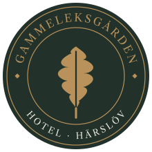

Comfort vierpersoonskamer
Ons meest voorkomende kamertype. Tweepersoonsbed in de kamer en twee eenpersoonsbedden boven op de vide.
vanaf 795 kr / nacht

Gammeleksgården Hotel
20 kamers van ca. 20 m², allemaal met eigen badkamer en plek voor vier. Elke kamer heeft bedden zowel beneden als boven op een vide. De kamertypes verschillen alleen in hoe de bedden verdeeld zijn.
Prijs per nacht: 1–2 gasten vanaf 795 kr, 3 gasten vanaf 995 kr en 4 gasten vanaf 1 195 kr. De prijs varieert per seizoen.
Ons meest voorkomende kamertype. Tweepersoonsbed in de kamer en twee eenpersoonsbedden boven op de vide.
vanaf 795 kr / nacht

Twee eenpersoonsbedden in de kamer en een tweepersoonsbed boven op de vide.
vanaf 795 kr / nacht

Vier eenpersoonsbedden, twee in de kamer en twee op de vide. Handig voor collega's of vrienden.
vanaf 795 kr / nacht

Eén tweepersoonsbed in de kamer en één op de vide. Geschikt voor twee stellen die samen reizen.
vanaf 795 kr / nacht
De kamertypes in 360°
Alle 20 kamers zijn even groot, hebben een eigen badkamer en plek voor vier. Het verschil is waar het tweepersoonsbed staat: beneden in de kamer, boven op de vide, op beide plekken of helemaal niet. Kijk rond in een kamer van elk type.

Kamer 10 Tweepersoonsbed beneden en eigen badkamer. De trap leidt naar de vide met tweepersoonsbed.
Sleep aan het beeld om rond te kijken. Klik op de ringen op de vloer om verder te gaan.
De 360°-foto's zijn gemaakt in kamer 10.

Kamer 9 Twee eenpersoonsbedden beneden en eigen badkamer. De trap leidt naar de vide met twee eenpersoonsbedden.
Sleep aan het beeld om rond te kijken. Klik op de ringen op de vloer om verder te gaan.
De 360°-foto's zijn gemaakt in kamer 9.

Kamer 7 Tweepersoonsbed beneden en eigen badkamer. De trap leidt naar de vide met twee eenpersoonsbedden.
Sleep aan het beeld om rond te kijken. Klik op de ringen op de vloer om verder te gaan.
De 360°-foto's zijn gemaakt in kamer 7.

Kamer 6 Twee eenpersoonsbedden beneden en eigen badkamer. De trap leidt naar de vide met tweepersoonsbed.
Sleep aan het beeld om rond te kijken. Klik op de ringen op de vloer om verder te gaan.
De 360°-foto's zijn gemaakt in kamer 6.
Inbegrepen in alle kamers
Goed om te weten
Inchecken vanaf 17.00 uur en uitchecken uiterlijk 11.00 uur. Soms kun je eerder komen, maar dat kunnen we niet beloven, dus vraag het ons gerust. De sleutel haal je op bij de receptie: bel aan, dan komt ons personeel, dat op de boerderij woont en normaal 08–22 uur bereikbaar is. Kom je later, bel of schrijf ons dan vooraf, dan regelen we het. Bij het uitchecken laat je de sleutel achter in de sleutelbus.
Ontbijt wordt op dit moment niet geserveerd, maar in de zomer meestal wel. In de gemeenschappelijke keuken kun je dag en nacht zelf koken en spullen in de koelkast bewaren.
Huisdieren zijn niet toegestaan in de hotelkamers.
Roken is alleen toegestaan op de aangewezen plek, ver van de ramen en ventilatieroosters van het huis.
Meer veelgestelde vragen
Kom je met de camper?
Zet je camper op het erf en gebruik de douche, het toilet en de keuken van het hotel. Vanaf 250 kr per etmaal.
Over de camperplaats